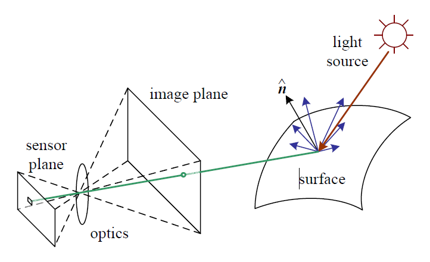

14: Image Processing
Code
 Demo Data
Demo DataSlides
 PDF Slides
PDF Slides HTML Slides
HTML SlidesDATA 3464: Fundamentals of Data Processing
Image Processing
Charlotte Curtis November 24, 2026
Topic overview
- Image representation
- File formats and compression
- Preprocessing for image recognition tasks
Resources used:
Images as 2D signals
- The light that enters a camera can be modelled as continuous signal: \[f(x, y),\space -\infty < x, y < \infty\]
- Digital images are sampled: \[f[n, m], \space n = n \Delta_x, m = n \Delta_y\] where typically \(\Delta_x = \Delta_y\)
- The area \(\Delta_x \times \Delta_y\) is called a picture element, or pixel

Image channels
- A photosensor responds to light intensity with an electrical signal
- Physical filters restrict the colour that reaches each sensor
- On most digital cameras, 1 sensor \(\ne\) 1 pixel; it is instead interpolated to create a typical 3-channel image
- (Inexplicably, the Python imaging library Pillow uses the term “band”)

Images as (3D) 2D arrays
- Size (
np.shape) usually defined as[rows, cols, (channels)] - Typical 8-bit image: integers from 0 to 255
- For processing, common to convert to float and normalize
- RGB examples of individual pixels:
[255, 0, 0][128, 128, 128][255, 255, 255]
- Images can also be transformed into the spatial frequency domain
Portable Network Graphics
- PNG is an image format released in 1996 as a GIF replacement
- Typically 8 bits per channel, but can be 1, 2, 4, 8, or 16
- 3x RGB channels, plus an optional alpha (transparency) channel
- Space saved in two ways:
- Indexed colour, where numbers map to a finite set of colours
- Lossless compression, e.g.
[0 0 0 0 0 0 0]\(\rightarrow\)7 0
What kinds of images would benefit from this compression scheme?
Joint Photographic Experts Group
- JPEG is an image standard released in 1992 for photographic images
- Lossy compression based on human vision: brightness is more important than colour, and low frequencies are more important than high
- The “quality” of a JPEG relates the degree of quantization
A Cautionary Tale of Image Classification
- As convolutional neural networks (CNNs) gained popularity as image recognition powerhouses, people started using them for all sorts of things
- One example: predicting whether someone is a criminal based on a photo
- Thoroughly debunked in a paper that mentions, among other issues:
- Criminal samples are all 8-bit greyscale PNG photographs of printed images, taken with the same camera
- Non-criminals are RGB JPEGs from 5 different sources, converted to greyscale to be “compatible with mugshots from the criminal category”
Preparing images for machine learning
- As with audio, images should be consistent
- Let’s check out some public datasets
- Two approaches:
- keep raw data and process on the fly (e.g. ImageNet)
- apply some preprocessing and store (e.g. CIFAR-10)
- Common to do a bit of both, e.g. resize and save with consistent format, then apply various transforms during both training and inference
As usual, there is a tradeoff between time and space
Image Transformations
- Geometric transforms resize, rotate, skew, shift, etc
- Point operators independently change each pixel, e.g. histogram equalization
- Linear filters compute new pixel values from a weighted sum of values in a small neighbourhood
- Nonlinear filters compute new pixel values from a small neighbourhood in a nonlinear fashion
- Frequency domain filtering to selectively manipulate spatial frequencies
Resizing
- For computer vision purposes, most images need to be resized
- Most often, a square aspect ratio is used
- Can be rotated 90 degrees without modifying code
- Simplifies parameter specification
- Maybe some CUDA advantage if divisible by 8 (e.g. \(224 \times 224\))
- Resizing needs interpolation (or resampling), and distorts aspect ratio
- Alternatively (or additionally), image crops can be used
Linear Filters: Convolution
A filter or convolution kernel is a small (usually) square matrix that gets convolved with the image: \[(f * g)[n, m] = \sum_{i=0}^{n}\sum_{j=0}^{m} f[i, j]g[n-i, m-j]\]
Fun fact: this is the same as multiplication in frequency

Beyond linear filters
- Linear filters are simple weighted summations, and form the core of convolutional neural networks, widely used in computer vision
- Sometimes, nonlinear effects are useful, such as:
- Median image filtering to reduce certain types of noise
- Morphological operators for binary image masks
There is a huge world of image processing, including techniques for segmentation, feature detection, registration… too much to cover in this course!
Tools
In addition to Pillow and the usual numpy, matplotlib, scipy libraries:
ImageMagick is a command-line tool that can be combined with bash scripting to process a bunch of images, e.g.:
mkdir resized for img in *.jpg; do magick $img -resize 512x512! resized/$img doneOpenCV has functionality overlap with Pillow, but also computer vision algorithms
Torchvision provides load-time transformations for use with deep learning models
ITK is the OG classical image processing toolbox focused on medical imaging
What about videos?
- There are an absurd number of video formats
- Most common: MPEG4 container, H.264 video, AAC audio
- Containers can hold video, audio, subtitles, chapter information, etc
- Often video-only data is treated as a series of images (e.g. Kinetics)
- New considerations:
- Temporal (re)sampling
- Dataset splitting, videos are time series
Coming up next
- Data augmentation (if we have time)
- Assignment 3
- Written test 2
- Stuff your H drive for the practical exam